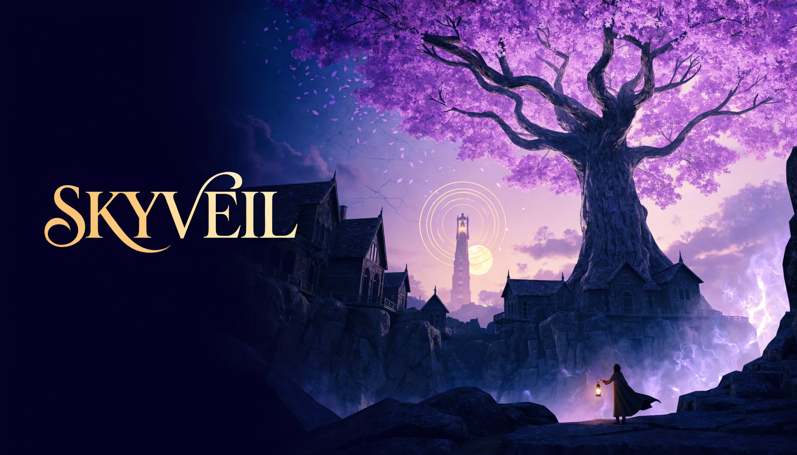

THE TWELFTH BELL
One lantern remembers what the night erased.
A 2ND EYES STORY
THE TWELFTH BELL · PARTY
Every lantern receives a different piece of Mara Vale's memory.
CHAPTER I · NAMES IN THE CLOISTER
CHAPTER II · THE BLACK GARDEN
He took the campus's grief into himself so the jacarandas could bloom. The roots can remember him—or release him by force.
THE LAST JACARANDA · GREAT COURT
the second eyes · choose your night
STORY · CHOOSE YOUR LANTERN